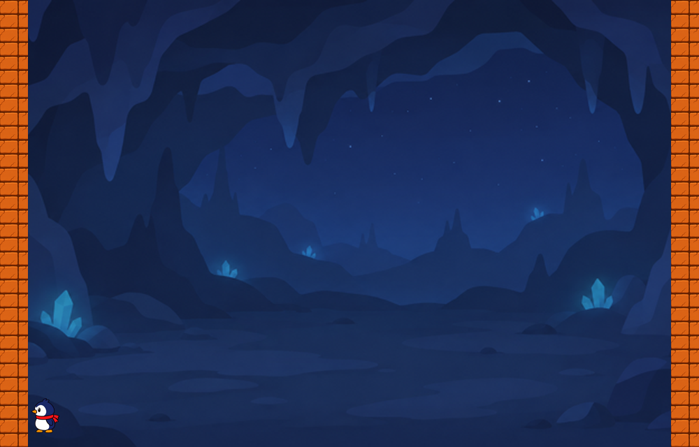

5장. 벽에서 멈추기
지난 장에서는 화살표 키로 펭귄을 움직이고, 움직이는 쪽을 바라보게 했습니다. 하지만 키를 계속 누르면 펭귄이 창 밖으로 나갑니다. 이번 장에서는 양쪽에 벽돌을 쌓고, 펭귄이 벽 앞에서 멈추도록 좌표를 제한합니다.
장을 마치면 펭귄이 왼쪽 벽 바로 앞에서 왼쪽을 보고 서 있습니다.

5-1 양쪽 벽에 벽돌 쌓기
벽이 보여야 펭귄이 어디에서 멈춰야 하는지 눈으로 확인할 수 있습니다. 먼저 창의 왼쪽과 오른쪽 끝에 벽돌 그림을 세로로 쌓습니다.
src/bubble/game/BubbleFrame.java를 엽니다. 벽돌 이미지를 담을 필드와 벽돌을 배치할 반복문, addBrick() 메서드를 추가합니다. 벽돌 그림은 미리 제공된 image/brick.png를 사용합니다.
public class BubbleFrame extends JFrame { private Player player; private ImageIcon brickIcon = new ImageIcon("image/brick.png"); public BubbleFrame() { setTitle("버블 게임");⋯ player = new Player(); add(player); for (int y = 0; y < 640; y += 20) { addBrick(0, y); addBrick(960, y); } addKeyListener(new KeyAdapter() { @Override public void keyPressed(KeyEvent e) {⋯ setVisible(true); } private void addBrick(int x, int y) { JLabel brick = new JLabel(brickIcon); brick.setBounds(x, y, 40, 20); add(brick); } public static void main(String[] args) { new BubbleFrame(); }brickIcon은 벽돌 그림을 읽어 둔 ImageIcon입니다. 같은 그림으로 여러 벽돌을 만들므로 필드에 한 번 읽어 두고 함께 사용합니다.
addBrick()은 벽돌 하나를 창에 놓는 메서드입니다. new JLabel(brickIcon)으로 그림을 표시할 레이블을 만듭니다. 이어서 setBounds(x, y, 40, 20)으로 위치와 크기를 정합니다. 앞의 두 값은 왼쪽 위 좌표이고, 뒤의 두 값은 너비와 높이입니다. 마지막의 add(brick)이 레이블을 창에 추가합니다.
반복문은 이 메서드를 호출해 벽돌을 쌓습니다. y는 0에서 시작해 20씩 커지며, 640보다 작은 동안 반복합니다. 벽돌 높이가 20이므로 다음 벽돌이 바로 아래에 이어집니다.
같은 높이에서 addBrick(0, y)와 addBrick(960, y)를 차례로 호출합니다. 왼쪽 벽은 x가 0인 자리에, 오른쪽 벽은 x가 960인 자리에 생깁니다. 반복문이 끝나면 양쪽에 세로 벽이 만들어집니다.
BubbleFrame의 main()을 실행하고 왼쪽 화살표 키를 누릅니다. 양쪽 끝에 벽돌 벽이 보이지만, 펭귄은 아직 벽을 지나갑니다. 펭귄이 왼쪽 벽돌 위에 겹치는 모습도 확인합니다.
벽돌 레이블을 추가하면 그림만 나타납니다. Swing은 두 레이블이 겹쳤다고 해서 이동을 막아 주지 않습니다. 펭귄을 멈추려면 이동 코드에서 벽의 위치를 확인해야 합니다.
5-2 벽에서 멈추기
펭귄이 움직인 뒤 좌표를 확인하고, 벽을 넘었다면 벽 앞으로 되돌립니다. 키를 계속 누르더라도 화면에 표시할 좌표가 벽을 넘지 않게 만드는 방식입니다.
src/bubble/game/Player.java를 엽니다. move() 메서드에서 좌우 이동으로 x를 바꾸는 부분 뒤에 조건문 두 개를 추가합니다. 방향에 따라 그림을 고르는 부분보다 앞에 넣습니다.
x += SPEED; direction = Direction.RIGHT; } if (x < 40) { x = 40; } if (x > 910) { x = 910; } if (direction == Direction.LEFT) { setIcon(playerL); } else {x는 펭귄 레이블의 왼쪽 끝 좌표입니다. 왼쪽 벽은 x가 0인 자리에서 너비 40만큼 차지합니다. 따라서 펭귄의 왼쪽 끝이 40보다 작아지면 벽 안으로 들어갑니다. 첫 번째 조건문은 이때 x를 40으로 되돌립니다.
오른쪽 벽에서는 펭귄의 너비도 고려해야 합니다. 펭귄의 왼쪽 끝이 벽에 닿을 때까지 움직이면 몸 전체가 벽과 겹치기 때문입니다. 이 게임에서 오른쪽 벽 바로 앞에 서는 x 좌표는 910입니다. 두 번째 조건문은 x가 910을 넘으면 910으로 되돌립니다.
두 조건문은 반드시 이동으로 x를 바꾼 뒤, setLocation()으로 화면 위치를 바꾸기 전에 실행해야 합니다. player.move()가 호출되면 먼저 이동할 좌표를 계산합니다. 이어서 벽을 넘었는지 확인해 좌표를 고칩니다. 마지막으로 setLocation()이 고친 좌표를 화면에 반영합니다.
예를 들어 펭귄이 왼쪽 벽 앞인 x = 40에 있다고 생각해 봅시다. 왼쪽 이동으로 x가 40보다 작아져도 곧바로 40으로 돌아옵니다. 게임 루프가 같은 동작을 반복하므로, 키를 계속 눌러도 화면에서는 벽 앞에 멈춰 있습니다.
좌표를 되돌리는 조건문은 바라보는 방향을 바꾸지 않습니다. 왼쪽 키를 누르면 기존 이동 코드가 방향을 Direction.LEFT로 정합니다. 따라서 벽에 막혀 위치가 그대로여도 펭귄은 왼쪽을 바라봅니다.
게임을 다시 실행합니다. 왼쪽 화살표 키를 눌러 펭귄을 벽까지 이동한 뒤, 1초 동안 더 누릅니다. 펭귄이 벽돌과 겹치지 않고 왼쪽 벽 바로 앞에 서 있어야 합니다.
오른쪽 화살표 키도 계속 눌러 봅니다. 오른쪽 벽 앞에서도 멈춘다면 양쪽 좌표 제한이 모두 적용된 것입니다. 확인을 마치면 왼쪽 벽 앞으로 돌아와 왼쪽을 바라보게 합니다.
이번 장의 코드는 벽돌 그림을 검사하지 않고, 정해 둔 좌표로 이동 범위를 제한합니다. 벽이 항상 같은 자리에 있으므로 두 조건문으로 벽을 넘는 이동을 막을 수 있습니다.
작업을 마치면 src/bubble/game의 자바 코드를 ex05에 복사해 이번 장의 완성본을 보관합니다.